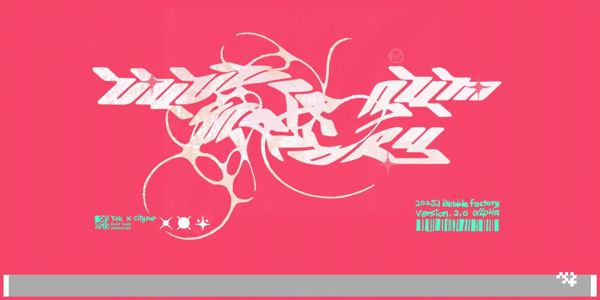

Technical art highlights
- Translucent bubble/shield material: Fresnel, normal distortion, premultiplied alpha
- Glossy gum-lake surface tuned to the art direction
- HDR emissive interaction highlights for bloom
- Abstract C# power-up system
- Spatial audio tied to moving VFX objects
- Shipped in 48 hours as lead developer
01Overview
Bubble Factory is a 3D platformer made in 48 hours for Global Game Jam 2025 (theme: Bubble). You play a bubble-gum-loving character crossing a candy-pink factory: chew different gums to unlock jumps and bubble shields, dodge cannon fire, and cross a glossy gum lake.
I was lead developer, level designer and technical artist. I built the gameplay systems in Unity (URP, C#) and authored the game’s signature materials: the translucent bubbles and bubble shield, the gum-lake surface, the candy sky and the emissive interaction highlights. I also wrote the narrative and worldbuilding, using Figma flow diagrams to line the story up with the level layout.

02My contributions
Bubble material
Stylized translucent bubble in Shader Graph: Fresnel rim, transparency blending and normal distortion to fake reflection and refraction. Used on floating bubbles and the player’s bubble shield.
Gum-lake surface
Re-tuned a normal-mapped, specular water material into a glossy pink bubble-gum lake that reads as sticky and soft.
Emissive feedback
HDR emissive Highlight and Collect materials that bloom when players look at or pick up gum.
Gameplay systems (C#)
An abstract GumBase power-up system, shields with hit counts and timers, drifting bubbles with distance-attenuated audio, and cannons.
Level design & narrative
Level layout and story flow planned in Figma so progression and narrative beats line up.
Lead developer
Led programming across a 3-person code team to ship a playable build in 48 hours.
03Materials & shading
The whole game had to read as one candy-colored world at a glance. I built a small set of URP materials that do most of the visual work:
Bubble & bubble shield
Transparent URP surface with premultiplied alpha and ZWrite off in the transparent queue (3000), so overlapping bubbles layer cleanly and highlights stay bright. Environment/cubemap reflections give the soap-film sheen. A Shader Graph layer adds a Fresnel rim and normal distortion for the fake refraction.
Where it’s used
Assigned to the drifting bubbles (Bubble1–3) and the player’s Shield, so the pickup and the power-up it grants share one visual language.
Gum-lake surface
A normal-mapped, specular water material retinted and re-tuned into glossy pink bubble gum rather than water.
Why
Getting a reflective, wavy surface from an existing shader and tuning it to the art direction saved hours in a 48-hour jam.
Candy sky
An emissive pink SKY material (base ≈ #F57882, red emission) plus a stylized skybox set the warm, sugary palette for the level.
Palette
Every material shares the same pink/coral family, so the scene holds together even with placeholder geometry.
Interaction highlights
Highlight (white, HDR emission ≈ 2.1) and Collect (pink, HDR emission ≈ 1.6) push past 1.0 so they bloom.
System hook
GumInteraction.cs swaps in the highlight material when the camera looks at a gum, so players know what they can chew.

04Gameplay


05Code
Excerpts are condensed from the jam source, with comments translated to English.
Power-ups through one abstract class
Every gum inherits from GumBase and only implements ActivateEffect(), so adding a new power-up mid-jam was one small class.
public abstract class GumBase : MonoBehaviour
{
public AudioClip chewingSound;
public void PlayChewingSound() { audioSource.PlayOneShot(chewingSound); }
public void HideGum() { gameObject.SetActive(false); }
public abstract void ActivateEffect(); // each gum defines its own power-up
}
public class JumpGum : GumBase
{
public override void ActivateEffect()
{
playerController.ActivateJump();
PlayChewingSound(); HideGum();
}
}
public class TimeShieldGum : GumBase
{
public override void ActivateEffect()
{
playerTimeShieldManager.ActivateTimeShield(); // bubble shield with a 5 s timer
PlayChewingSound(); HideGum();
}
}
Drifting bubbles with spatial audio
public class MovingBubble : MonoBehaviour
{
public Vector3 startPosition, endPosition;
public float moveDuration = 4f;
public float minInterval = 1f, maxInterval = 3f;
public AudioSource bubbleAudioSource;
public Transform player;
public float maxDistance = 10f; // sound fully fades out beyond this
IEnumerator MoveAndResetRoutine()
{
while (true)
{
bubbleAudioSource?.Play();
for (float t = 0; t < moveDuration; t += Time.deltaTime)
{
float k = Mathf.SmoothStep(0, 1, t / moveDuration); // ease in/out drift
transform.position = Vector3.Lerp(startPosition, endPosition, k);
yield return null;
}
bubbleAudioSource?.Stop();
transform.position = startPosition; // respawn
yield return new WaitForSeconds(Random.Range(minInterval, maxInterval));
}
}
void Update() // distance-attenuated bubble sound
{
float d = Vector3.Distance(player.position, transform.position);
bubbleAudioSource.volume = d < maxDistance ? Mathf.Lerp(1f, 0f, d / maxDistance) : 0f;
}
}
06Challenges & solutions
Transparent bubbles sorting badly
Overlapping translucent bubbles and the shield can flicker or darken if they write depth or blend like opaque surfaces.
Premultiplied, depth-write-off transparency
Rendered bubbles in the transparent queue with ZWrite off and premultiplied alpha, so they layer correctly and keep bright specular highlights.
Players not knowing what’s interactive
In a busy, uniformly pink level, gum pickups blended into the scene.
HDR emissive highlight on focus
Swapped in an HDR emissive material on look-at, so interactables glow and bloom without extra UI.
A whole look in 48 hours
No time to model and texture a detailed environment.
Let materials carry the art direction
A few strong materials (bubbles, gum lake, candy sky, glowing pickups) establish the world over simple prototype geometry.